This page gathers basic information about the Mongolian script and its use for the Mongolian language. It aims (generally) to provide an overview of the orthography and typographic features, and (specifically) to advise how to write Mongolian using Unicode.
Phonetic transcriptions on this page should be treated as an approximate guide, only. Many are more phonemic than phonetic, and there may be variations depending on the source of the transcription.
The Mongolian script is used for writing the Mongolian language. In the Mongolian People's Republic (Outer Mongolia), the traditional script was replaced by a Cyrillic orthography since the early 1940s, but revived in the 1990s, so that both scripts are now used in tandem. The script is also used within the Inner Mongolia Autonomous Region of the People’s Republic of China and elsewhere in China.
The traditional writing for Mongolian is known as Hudum Mongol bichig, and was adapted from the Old Uighur alphabet during the reign of Genghis Khan in the 13th century.
There are four other scripts which are derived from and closely related to Mongolian. These are the Galik, Todo (or "clear script"), Manchu and Sibe scripts.
The Mongolian script is an alphabet, ie. a writing system in which both consonants and vowels are indicated. See the table to the right for a brief overview of features for the modern Halh Mongolian orthography.
Modern Mongolian can be written using a subset of the letters available in the Mongolian Unicode block. The remainder are used for writing Todo, Sibe, and Manchu, or for writing foriegn words, especially in Tibetan and Sanskrit.
Mongolian text runs top to bottom in vertical lines and (unusually) the lines flow left to right.
The script is cursive, ie. letters in a word are joined. All letters join both on the left and right.
Words are separated by spaces, but also contain narrow spaces that precede suffixes and may produce shaping differences to the surrounding letters. These are part of the word, and the parts on either side should not be separated.
It has 16 basic consonant letters and 11 more for representing foreign sounds.
There are 8 vowel letters, including one for foreign sounds.
The script is monocameral.
There is a set of Mongolian digits.
Character index
The index points to locations where a character is mentioned in this page, and indicates whether it is used by the modern Halh Mongolian orthography described here.
See also a list of characters in the Mongolian Unicode blocks not used for the modern Halh Mongolian orthography, grouped by General Category.
Show the index
Letters
Basic consonants
ᠫ␣ᠪ␣ᠲ␣ᠳ␣ᠴ␣ᠵ␣ᠬ␣ᠰ␣ᠱ␣ᠭ␣ᠨ␣ᠩ␣ᠮ␣ᠯ␣ᠶ␣ᠷ
Extended consonants
ᠸ␣ᠹ␣ᠺ␣ᠻ␣ᠼ␣ᠽ␣ᠾ␣ᠿ␣ᡀ␣ᡁ␣ᡂ
Vowels
ᠢ␣ᠦ␣ᠤ␣ᠡ␣ᠧ␣ᠥ␣ᠣ␣ᠠ
Combining marks
Variation selectors
᠋␣᠌␣᠍
Other
ᢅ␣ᢆ␣ᢩ
Numbers
᠐␣᠑␣᠒␣᠓␣᠔␣᠕␣᠖␣᠗␣᠘␣᠙
Punctuation
᠂␣᠄␣᠃␣？␣！␣(␣)␣（␣）␣〈␣〉␣«␣»␣《␣》␣〔␣〕␣᠊␣᠁␣᠆
CLDR additions
‐␣‑␣–␣—␣…␣§␣†␣‡␣′␣″
Separator & other
␣
Character lists show:
Phonology
These are the sounds of Khalkha Mongolian.
Click on the sounds to reveal locations in this document where they are mentioned.
Phones in a lighter colour are non-native or allophones. Source Wikipedia.
Vowel sounds
Plain vowels
Diphthongs
Consonant sounds
labial
dental
alveolar
post-
alveolar
palatal
velar
uvular
glottal
stop
p pʰ pʲ pʲʰ
t tʰ tʲ tʲʰ
ɡ kʰ ɡʲ kʲʰ
ɢ
affricate
t͡s t͡sʰ
t͡ʃ t͡ʃʰ
fricative
f
s ɮ ɮʲ
ʃ
x xʲ
nasal
m mʲ
n
nʲ
ŋ
approximant
w wʲ
j
trill/flap
Structure
The basic unit of text is a word, however words can contain prefixes and suffixes. Some of the suffixes are separated from the root of the word by a small gap, but they are still considered to be part of the word.
Vowel harmony
Vowel harmony is an important aspect of the Mongolian language – words contain only masculine+neuter vowels, or only feminine+neuter vowels. The masculine vowels are:
ᠠ␣ᠣ␣ᠤ
The feminine vowels are:
ᠡ␣ᠥ␣ᠦ
The following vowel is neutral, and can appear in words with either masculine or feminine vowels.
ᠢ
Grammatical suffixes also have masculine and feminine versions.
Glyphs vs. phonemes
Unicode encodes separate characters for different sounds for the Mongolian language, regardless of whether the glyph shapes used are identical. For example, the glyph shapes for the 2 characters ᠣ [U+1823 MONGOLIAN LETTER O] and ᠤ [U+1824 MONGOLIAN LETTER U] are identical, as are those for ᠥ [U+1825 MONGOLIAN LETTER OE] and ᠦ [U+1826 MONGOLIAN LETTER UE]. The two pairs only differ in shape in isolated and initial forms.
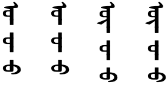
Initial, medial and final forms for characters representing ɔ, ʊ, o, and u, respectively.
Identical glyphs for different sounds occur across other pairings also. For example, the medial and final shapes for a and n are identical.
Initial, medial and final forms for characters representing a, and n, respectively.
The Unicode Standard provides the following examples of word pairs that cannot be distinguished visually.u,530 (Click on the words to see their actual composition.)
The confusable words ʊrtʊlong, ɔrdʊcamp, endehere, and adadevil in Mongolian.
The result of this encoding method is that it is impossible to accurately copy Mongolian text from a visual source unless you speak the language well enough to recognise the phonetics of the words involved. It also leads to mistakes when Mongolian speakers type text.
Spelling vs. pronunciation
Written Mongolian words use traditional spellings that may not correspond closely to modern pronunciations. For example, if you were to spell out the letters in the following word as written you would get uʤəgulxu, whereas the modern pronunciation is uʤuuləx.
ᠤᠵᠡᠭᠦᠯᠬᠦ
As previously mentioned, vowel harmony is an important part of the orthography for the Mongolian language.
Vowels for other languages
In addition to the set of Mongolian vowels, the Mongolian block also includes additional vowel characters for use with Todo, Sibe, Manchu and Ali Gali vowels.
Todo
ᡃ␣ᡄ␣ᡅ␣ᡆ␣ᡇ␣ᡈ␣ᡉ
Sibe
ᡝ␣ᡞ␣ᡟ␣ᡠ␣ᡡ
Manchu
ᡳ
Ali gali
ᢇ␣ᢈ
Suffixes
Many Mongolian suffixes are separated from the root or other suffixes by a small gap, eg. ᠭᠠᠵᠠᠷ ᠠ The Unicode Standard provides [U+202F NARROW NO-BREAK SPACE] for this gap, which is thinner than a normal space, and doesn't provide an opportunity for line-breaking.
Characters following NNBSP may take on special shapes.
Unlike characters following [U+202F NARROW NO-BREAK SPACE], the A or E following a word is not a suffix, but an integral part of the word. Whether a final A or E is joined or separated is a purely lexical decision, and not an instance of varying orthography.
MVS always requires the forward tail form of the following A or E letter. The preceding letter form varies according to the letter, and in some cases whether this is traditional or modern orthography. See fig_mvs.
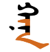
The same sequence of character with MVS before the last letter (left), and without (right).
Not used for Todo, Manchu or Sibe.
Consonants
The Mongolian block contains consonant symbols for use with Mongolian, Todo, Sibe, Manchu and Ali Gali. Some of the Mongolian characters are shared with other uses.
Basic Mongolian consonants
The Mongolian language has a basic set of 16 consonants.
Stops
ᠫ␣ᠪ␣ᠲ␣ᠳ
Affricates
ᠴ␣ᠵ
Fricatives
ᠰ␣ᠱ␣ᠬ␣ᠭ
Nasals
ᠨ␣ᠩ␣ᠮ
Liquids
ᠷ␣ᠯ␣ᠶ
QA and GA
In the current Mongolian encoding model, the code points ᠬ [U+182C MONGOLIAN LETTER QA] and ᠭ [U+182D MONGOLIAN LETTER GA] each have both masculine and feminine forms. The different forms have different shapes and different pronunciations.
The masculine form is used before a masculine vowel, and vice versa.
masculine
feminine
masculine
feminine
initial
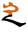
medial
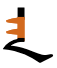
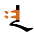
Initial and medial forms for QA and GA followed by masculine then feminine vowels.
The font is expected to automatically select the appropriate glyph form for these velar consonants. This becomes more complicated, however, where these consonants occur without a following vowel (ie. before another consonant, or in final position).
In Sibe and Manchu, the form is selected based on the previous vowel. In Mongolian and Todo, however, the shape depends on the gender of the word, as described in harmony, and this may not be detectable from the previous vowel. The Unicode Standard gives examples of 2 words where it is necessary to look at the beginning of the word to determine the shape at the end of the word.u,534
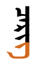
The words ʤarligorder and čerigsoldier, showing different forms of the final letter GA.
This puts a significant strain on the capabilities of the font itself and of the font developers, and some fonts do not achieve this correctly. In addition, exceptional circumstances have to be taken into account. In consequence, fonts may need 100 or more rules to handle this.
Repertoire extension
The full set of consonants used for Mongolian includes 11 letters that are normally used for writing foreign sounds.
Because the script is alphabetic, there are no special mechanisms for representing clusters of consonants without intervening vowels, or doubled consonants.
Combining marks
The Mongolian block contains 3 visible combining characters.
ᢅ␣ᢆ␣ᢩ
It also contains 3 invisible control characters, also classed by Unicode as combining characters, which can be used to indicate specific alternative forms for letters. See Context-based shaping.
Numbers
Mongolian often uses european digits, however there is a set of Mongolian digits.
᠐␣᠑␣᠒␣᠓␣᠔␣᠕␣᠖␣᠗␣᠘␣᠙
Traditionally, Mongolian digits run horizontally within the vertical lines, but it is common in modern text for them to run down the line instead.u
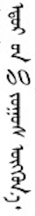
Digits arranged so they run down the line (left) and across the line (right).
Text direction
Mongolian script is written vertically, top to bottom, in columns that flow left to right. This is an unusual configuration. (Chinese, Japanese and Korean vertical text columns are read right to left). It derives from the fact that this script descended from a script (Old Uyghur) that was written right to left.
Fullwidth Latin alphabetic and digit characters are seen in traditional Mongolian text, as are fullwidth Chinese characters and punctuation (see mixed_text). When used, the latter are displayed upright. The fullwidth series of Unicode characters may be used as an easy way to achieve this.g5
Mixed Mongolian and Chinese text. (Click on the image to see larger.)
Cyrillic characters may also be seen, used in a way that resembles fullwidth characters, but this is actually a property of the font used to display the characters, since there are no fullwidth cyrillic code points in Unicode. Emoji are also expected to be displayed upright.g5
Non-fullwidth letters and numbers tend to be written sideways.g5 See mixed_text_sideways.
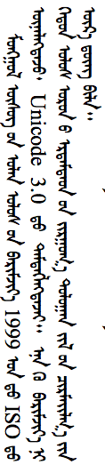
Sideways Latin text and numbers in vertical Mongolian.
Upright digits may be used for list counters. And Mongolian also has the feature referred to in Japanese as tate chu yoko, whereby small sequences of non-fullwidth numbers or punctuation may run horizontally within the vertical flow.g5 See fig_digits_tate_chu_yoko.
Certain punctuation marks are upright, and others are rotated.g5 (See inline.)
Many of the conventions seen in actual digital text may be determined more by the available technology than by what the content author wants to achieve.g5
When Mongolian excerpts are shown in text that is set horizontally (such as on this page), the Mongolian is sometimes represented as a sequence of single vertical words, eg. ᠮᠣᠩᠤᠯ ᠪᠢᠴᠢᠭ, but in other cases it is rotated left and joins horizontally, eg. ᠮᠣᠩᠤᠯ ᠪᠢᠴᠢᠭ.
Mongolian text written horizontally is read left-to-right. This means that if it contains embedded text from another language, such as English, there is no bidirectional behaviour (as there would be in Arabic-script text).
Note also that it is not possible to produce a page of vertical text by printing it horizontally and then rotating the page, This is because the order of lines in the rotated page will be right-to-left, whereas it should be left-to-right.
Glyph shaping & positioning
This section brings together information about the following topics:
writing styles;
cursive text;
context-based shaping;
context-based positioning;
baselines, line height, etc.;
font styles;
case & other character transforms.
The orthography has no case distinction, and no special transforms are needed to convert between characters.
Most of the complexity of the Mongolian traditional script has to do with two things: (1) characters are allocated on the basis of phonemic differences, but many characters share identical shapes, and (2) there are many variant forms for a given character, some of which cannot be produced automatically.
Cursive shaping
Similarly to the Arabic script, Mongolian letters within a word tend to be joined cursively along the centre baseline, and the shapes of joined characters can vary significantly in various positions. Unlike Arabic, and many other cursive scripts, there are no characters that only join on one side.
Letters following a Mongolian suffix space may need to be displayed using a joining form, however that is not always the case. It depends on the suffix.
The base shape of a letter can change significantly, depending on the position in a word. On the other hand, a number of letters have adopt identical shapes in the same, or sometimes different joining contexts.
Context-based shaping
Certain letters ligate with adjacent letters.
In addition to the cursive shaping mentioned just above, individual letters may have context-dependent variant forms, that can be quite different from the standard forms. Where the alternative form can be determined algorithmically, the font should produce the change.
An unusual feature of the Mongolian traditional script is that the shape of a letter may depend on the vowel harmony of the word, and so may be determined at some distance from the character in question.
For unpredictable variants, the Mongolian block has three 'free variation selectors' which can be used to indicate which variant form should be used. The variant selector is used immediately after the character to be changed.
᠋␣᠌␣᠍
Unfortunately, variation selector usage is still not completely standardised across Mongolian fonts. For a set of tables summarising current standardisation proposals and major font support see Mongolian variant forms.
Context-based positioning
tbd
Font styles
tbd
Baselines & inline alignment
The default baseline for Mongolian-script text runs down the centre of the vertical line spacing, as shown in centre_baseline.n,#h_text_decoration
The Mongolian baseline runs down the centre of the vertical line.
When mixed with other languages, the text in those languages should also be centre-aligned along the Mongolian baseline.n,#mixed_arrangement_alphanum
Punctuation & inline features
Grapheme boundaries
A grapheme is a user-perceived unit of text. The Unicode Standard uses generalised rules to define 'grapheme clusters', which approximate the likely grapheme boundaries in a writing system.
tbd
Word boundaries
The concept of 'word' is difficult to define in any language (see What is a word?). Here, a word is a vaguely-defined, but recognisable semantic unit that is typically smaller than a phrase and may comprise one or more syllables.
Mongolian uses a mixture of local punctuation and punctuation from Chinese.
Question marks and exclamation marks are fullwidth, upright characters (ee an example). Mongolian punctuation is horizontally centred in each vertical line.n,#punctuation_rules
Like Chinese and Japanese, Mongolian text uses ruby annotations to express the pronunciation of words for beginners or in ambiguous situations. This is useful in Mongolian because many characters look identical in cursive text.
Annotations are typically written in the Latin script, and run down the right side of the line.g1
Ruby in Mongolian text.
Other inline ranges
Underlines run down the right side of vertical lines of Mongolian text. Lines down the left side are equivalent to overline in English text.n,#h_text_decoration
The side of the vertical line for underlines doesn't change for embedded Latin text. Since Latin text runs down the page, this makes the underline run across the top of the Latin letters. See the red line in text_decoration_mixed.n,#h_text_decoration
Underline in Mongolian text with embedded Latin content.
There are a number of different styles of underlining in use, as shown in underline_styles.g10
Various underline styles in Mongolian text. (Click on the picture to see larger.)
If an underline is styled so that it leaves a gap below spaces that separate words, the underline should not also leave gaps below the narrow spaces used to separate some suffixes from the word root. The desired outcome is that shown here, however implementations may vary.g9
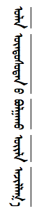
Underlining with gaps doesn't leave a gap between roots and suffixes.
As for most writing systems, there are restrictions around which characters are allowed to start or end a line (eg. question marks and colons should not be used at the beginning of a line, and opening brackets should not be used at the end of a line).n,#punctuation_rules
When Traditional Mongolian (and Todo) is hyphenated, the visual marker used is ᠆ [U+1806 MONGOLIAN TODO SOFT HYPHEN], which is placed at the beginning of the second line.u,545
Text alignment & justification
To justify the text on a line, the spaces between words are adjusted.
When Chinese characters are embedded in Mongolian text and justification applied, space is not added between the Chinese characters (as it would be in a Chinese document).n,#mixed_arrangement_cjk
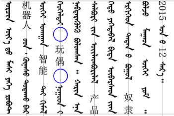
Space is added around embedded Chinese text during justification, not between.
Letter spacing
tbd
Counters, lists, etc.
You can experiment with counter styles using the Counter styles converter. Patterns for using these styles in CSS can be found in Ready-made Counter Styles, and we use the names of those patterns here to refer to the various styles.
The Mongolian orthography uses ASCII and native numeric styles. It also uses fixed styles based on circled numbers.
Numeric
The mongolian numeric style is decimal-based and uses these digits.rmcs
᠐␣᠑␣᠒␣᠓␣᠔␣᠕␣᠖␣᠗␣᠘␣᠙
Examples:
᠑␣᠒␣᠓␣᠔␣᠑᠑␣᠒᠒␣᠓᠓␣᠔᠔␣᠑᠑᠑␣᠒᠒᠒␣᠓᠓᠓␣᠔᠔᠔
Fixed
The circled-decimal fixed style uses these numbers. It is only able to count to 50.
The dotted-decimal fixed style uses these numbers. It is only able to count to 20.
⒈␣⒉␣⒊␣⒋␣⒌␣⒍␣⒎␣⒏␣⒐␣⒑␣⒒␣⒓␣⒔␣⒕␣⒖␣⒗␣⒘␣⒙␣⒚␣⒛
The Baiti and Noto fonts show the first 20 counters for the circled style lie on their side, instead of upright. The Mongolian White font fixes this, but doesn't appear to handle dotted digits above 9.
As list counters, these digits are generally used upright, as shown in fig_circled_counters. g5
List counters rotated. (Click on the image to see larger.)
Styling initials
tbd
Page & book layout
This section is for any features that are specific to Mongolian and that relate to the following topics:
general page layout & progression;
grids & tables;
notes, footnotes, etc;
forms & user interaction;
page numbering, running headers, etc.
General page layout & progression
Generally, book binding is on the left, and pages are turned towards the left, unlike books set vertically in Chinese or Japanese.n,#h_binding
Mongolian books are bound on the left, and pages turn to the left.
Columns run horizontally, rather than vertically as in Western typography.n,#h_columns


 [
[ [
[ 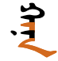
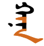


 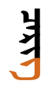
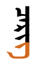
 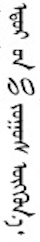
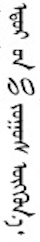